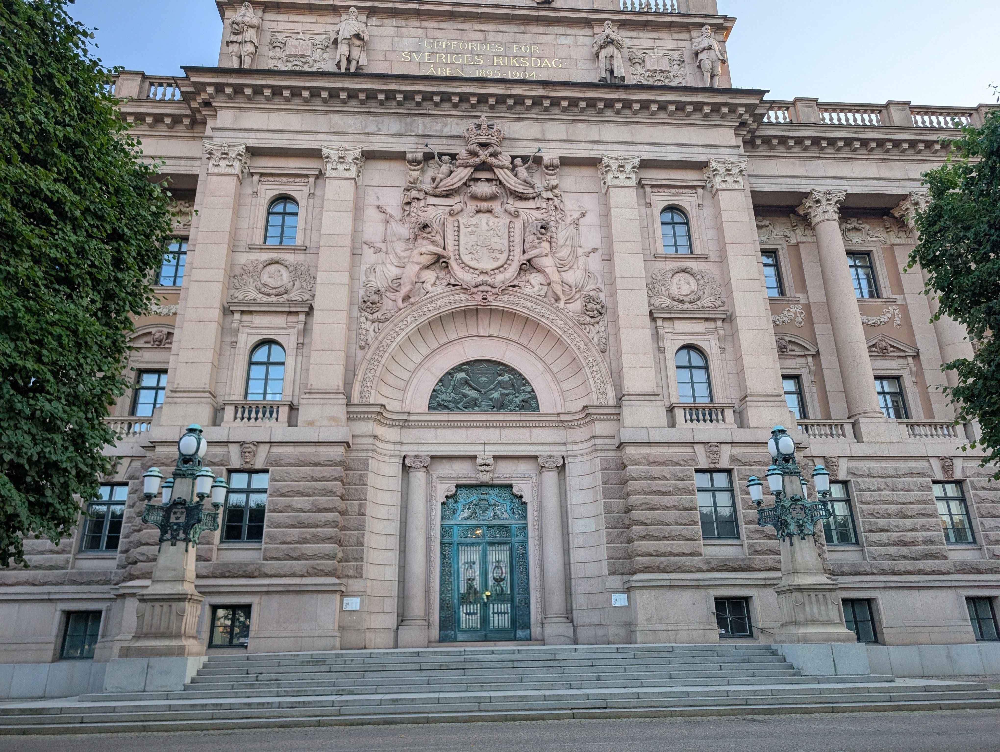
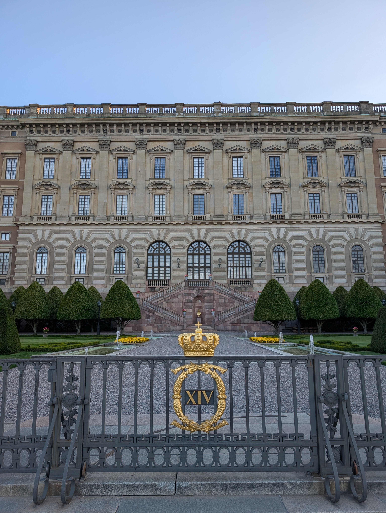
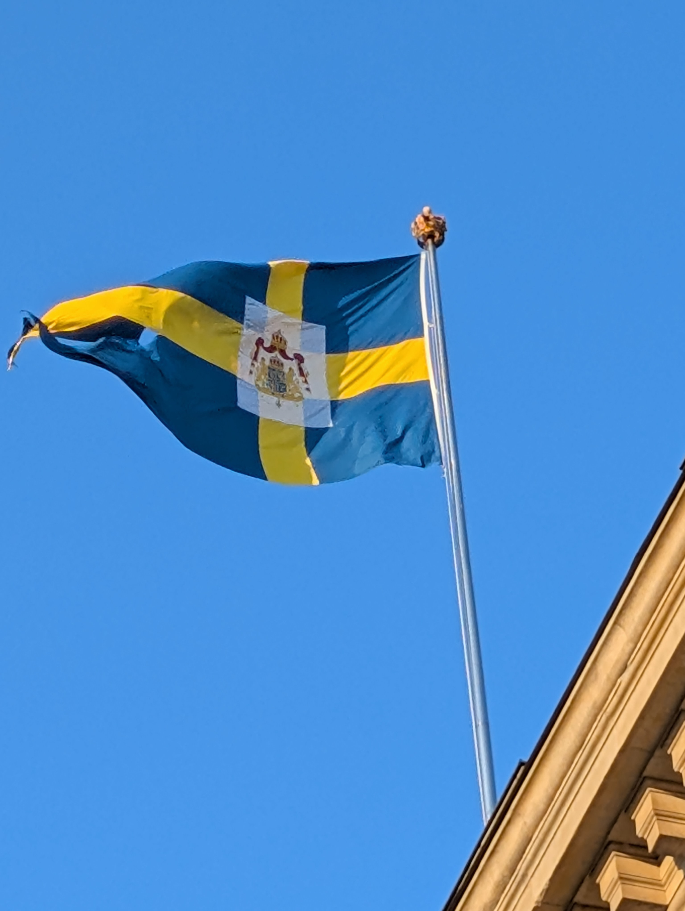

Table of Contents
A Constitutional Monarchy
Sweden is a Constitutional Monarchy, which means that the king is the head of the state but has no political power. Since 1974 the king's role has been mainly ceremonial and representative
The real power lies with the parliment (Riksdagen) and the goverment

The Royal Family
The current king is Carl XVI Gustaf, who became king in 1973. His wife is queen Silvia. Their eldest child, Crown Princess Victoria, is next in line to the throne.
The Royal Palaces
The Royal Palace in Stockholm is one of the largest palaces in Europe that is still used as an official residence for a head of state. Parts of it are open to visitors. The royal family also lives at Drottningholm Palace, which is a UNESCO World Heritage site.

